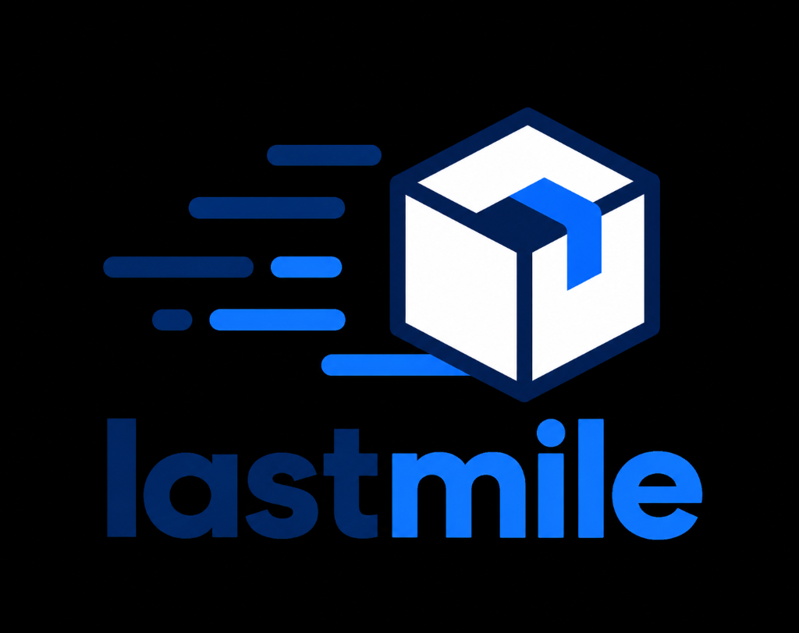

End-to-end UX for an urban last-mile delivery application: personas, empathy mapping, customer journey maps, and an interactive 9-screen prototype designed to eliminate address ambiguity and transit anxiety.

Over 60% of delayed deliveries occur within the final 100 meters due to confusing gate access codes, missing landmark instructions, and anxious customer-driver telephone loops.
Complex apartment complexes and unmarked gates cause couriers to circle neighborhoods, increasing transit time by an average of 8.5 minutes per stop.
Traditional ETA trackers update sporadically, prompting anxious customers to call drivers repeatedly while in active traffic.
Replacing unstructured free-text note fields with standardized, interactive tags (e.g. Ring Bell, Leave with Security, Call on Arrival).
Quantitative survey data and field ride-alongs revealed friction points for both customers and fleet couriers.
Unexpected driver phone calls during meetings, vague 30-minute delivery windows, and missing photographic verification when items are left unattended.
Fumbling with smartphones with riding gloves on, unreadable multi-line instructions, and difficulty contacting recipients at gated communities.
Synthesizing insights from 14 customer interviews and 6 field courier ride-alongs.
Orders daily essentials while working remotely. Needs contactless drops, silent notifications, and clear photo confirmation upon doorstep arrival.
Completes 40+ drops per 8-hour shift. Needs high-contrast, glanceable directions, 1-tap call-to-customer, and frictionless barcode scanning.
Iterative testing of thumb-zone ergonomics and high-stress checkout scenarios.
Placed all primary action triggers (Track Driver, Call, Delivery Preferences) in the bottom 40% of the screen for seamless single-handed operation.
Deconstructed complex checkout into 3 micro-steps: Item Summary → Address Pin Drop & Gate Code → Payment Authorization.
Designed graceful fallback states for spotty GPS telemetry, driver detours, and failed delivery reschedules.
Adhering strictly to WCAG AAA contrast standards to maintain readability under harsh outdoor sunlight.
Dark slate typography (#0F172A) on clean crisp canvas (#F8FAFC) and high-visibility digital cobalt (#2563EB) for primary touch targets.
Clear status banners: Order Placed, Preparing at Hub, Dispatched, Courier Nearby (within 500m), and Successfully Delivered.
A comprehensive mobile journey designed in Figma, validated through interactive usability testing.
Curated local vendors, estimated transit times, and immediate order status chips.
Visual quantity selectors, package sizing notes, and special fragile handling toggles.
Transparent price breakdown with explicit delivery fee tiers based on vehicle type.
Draggable building entrance pin, gate security intercom codes, and unit notes.
Biometric authorization with immediate order confirmation and live dispatch trigger.
Real-time vector courier route, traffic latency notifications, and direct chat.
Proximity push alert, safe drop photo preview, and courier tip selector.
Tag-based feedback (Accurate Drop, Polite, Fast Route) for continuous driver recognition.
Searchable receipts, saved complex gate instructions, and 1-tap reorder.
Tested on Maze with unmoderated usability scenarios measuring completion time and error rates.